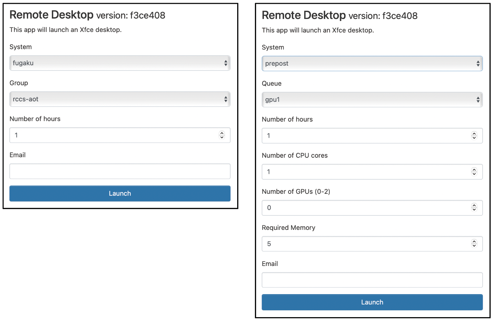
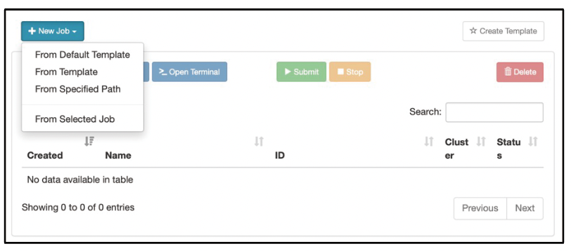
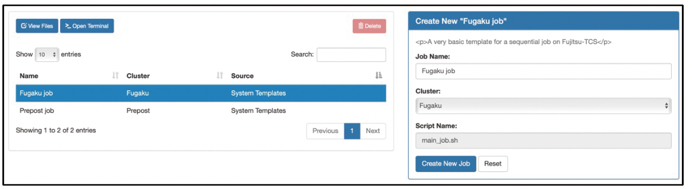
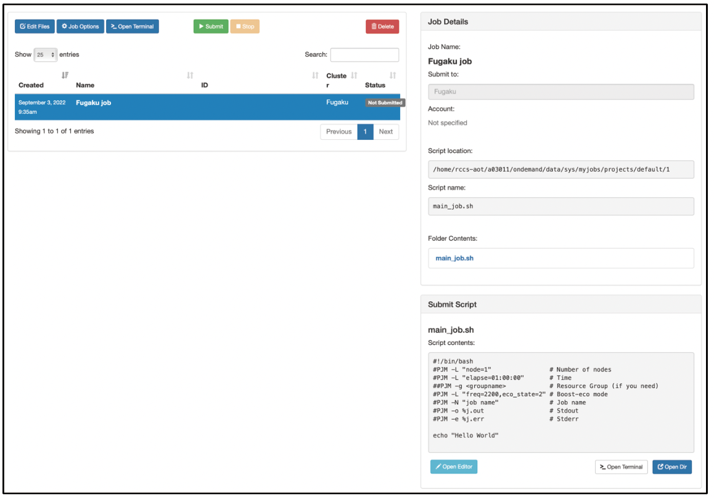

Open OnDemand on Fugaku
Overview
Open OnDemand
Open OnDemand is a web portal for using parallel computer systems from a web browser. Open OnDemand on Fugaku supports both compute nodes on Fugaku and pre-post environments. Applications provided on Open OnDemand on Fugaku are grouped into "Interactive Apps" that run on compute nodes and "Passenger Apps" that run on the server where Open OnDemand is installed.

How to login
Please visit https://ondemand-test.fugaku.r-ccs.riken.jp. The client certificate sent to you when your Fugaku account is created must be installed in your web browser.
Interactive Apps
We provide Remote Desktop, Jupyter, RStudio, and VSCode applications. Clicking on the icon will bring up a web form for entering resources and other information. When "fugaku" or "prepost" is selected in "System" field, the input fields thereafter will change. If you include your email address in "Email" field, you will be notified by email when the job starts. Clicking "Launch" field will submit the job to the system selected in "System".

When a job is launched on a compute node, a link to the application is displayed. By clicking on the link, you can use the corresponding application from your web browser.

Passenger Apps
Active Jobs
You can view job information, and delete your jobs.

Home Directory
You can upload, download, delete, and edit files.

Job Composer
You can create and submit jobs. To create a job, click "New Job" and then "From Template".

Select either "Fugaku Job" or "Prepost Job" and click "Create New Job" to create a job script template.

Click "Open Editor" to edit the created template. After editing, click "Submit" to submit the job to a compute node.

Shell Access
You can perform operations using a command line interface on your web browser.

Note
- This service is a beta test. The current Open OnDemand URL (https://ondemand-test.fugaku.r-ccs.riken.jp) will be provided with a different URL upon official release.
- A job in Intaractive Apps runs with the boost-eco mode on a compute node.
- The temporal directory for Open OnDemand is ${HOME}/ondemand, which is automatically created. There is no problem to delete it.